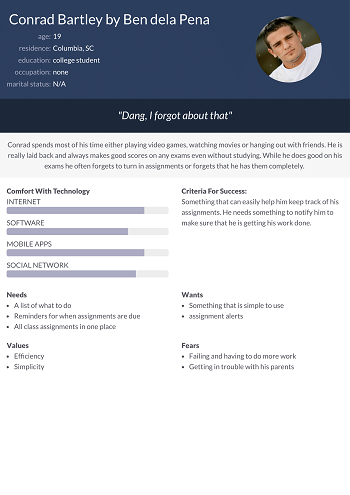
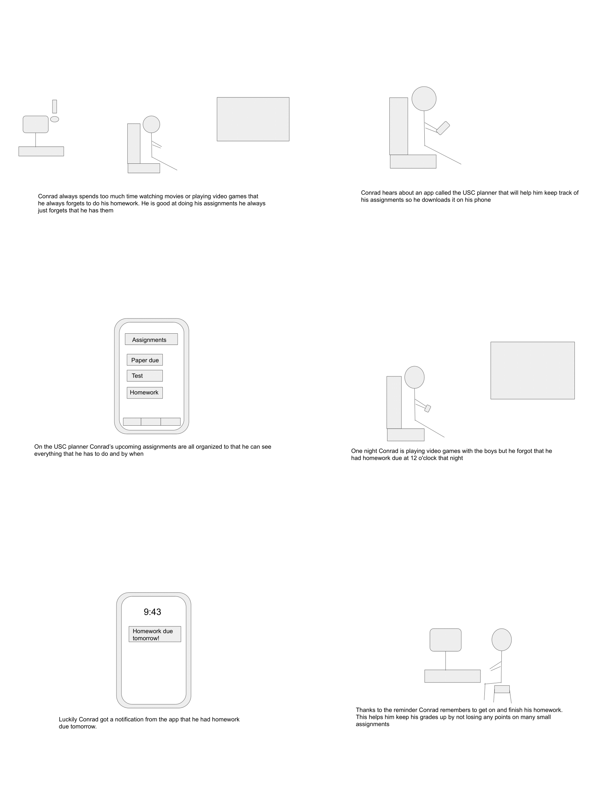
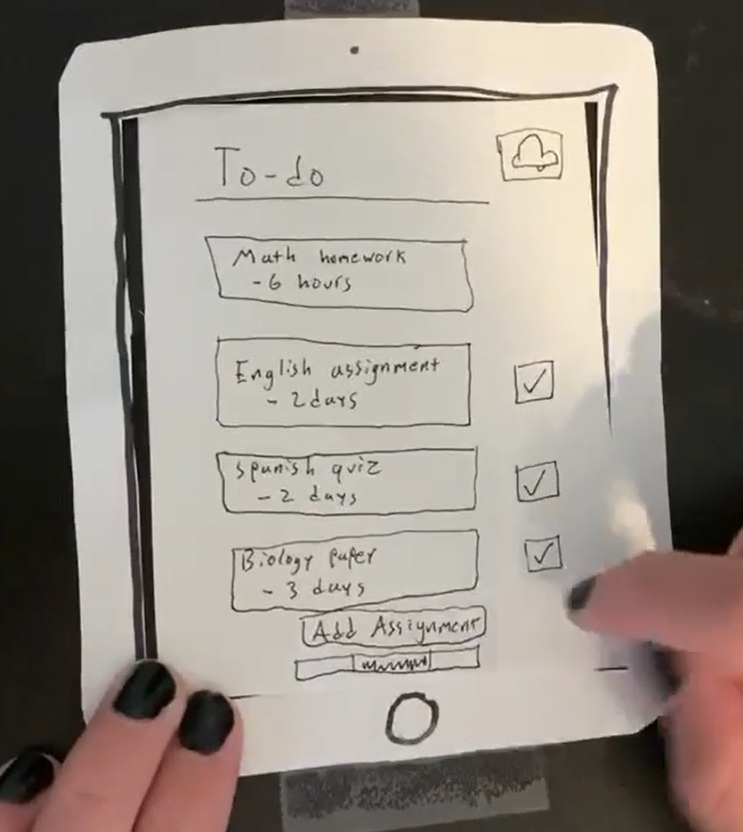
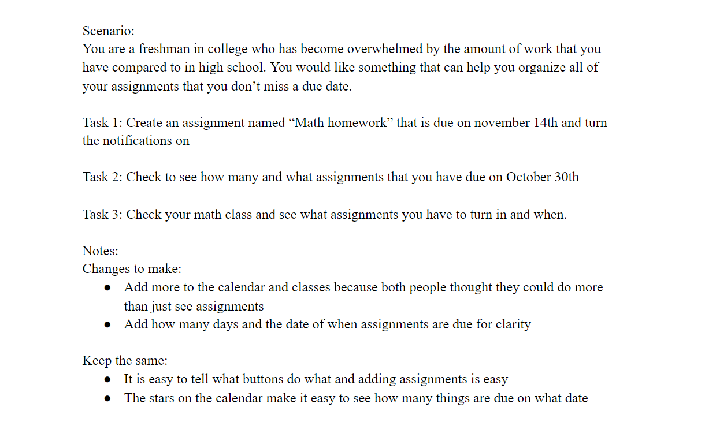
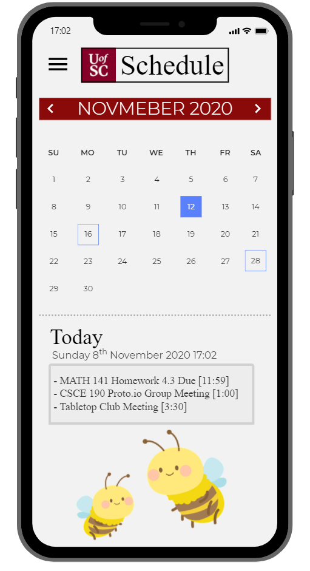

Problem statement: USC Planner

Hard working students need an effective and simple way to plan their schedules to improve their time management and organization.
Affinity Diagram: USC Planner

My group and I worked together to come up with ideas of what would be included in our planner.
Personas: 4 personas for USC Planner
The personas of the users of the USC Planner.
Storyboard: 4 stories for USC Planner
The stories of users of the USC Planner
Sketch: USC Planner

Sketches for the how the USC Planner could look
Paper Prototype: USC Planner
A protoype of the planner on paper to see what it would be like
Usability Testing: USC Planner
Usabilty test results when given a scenario and tasks
Low-fi Prototype: USC Planner
Low Fidelity Prototype of the USC Planner